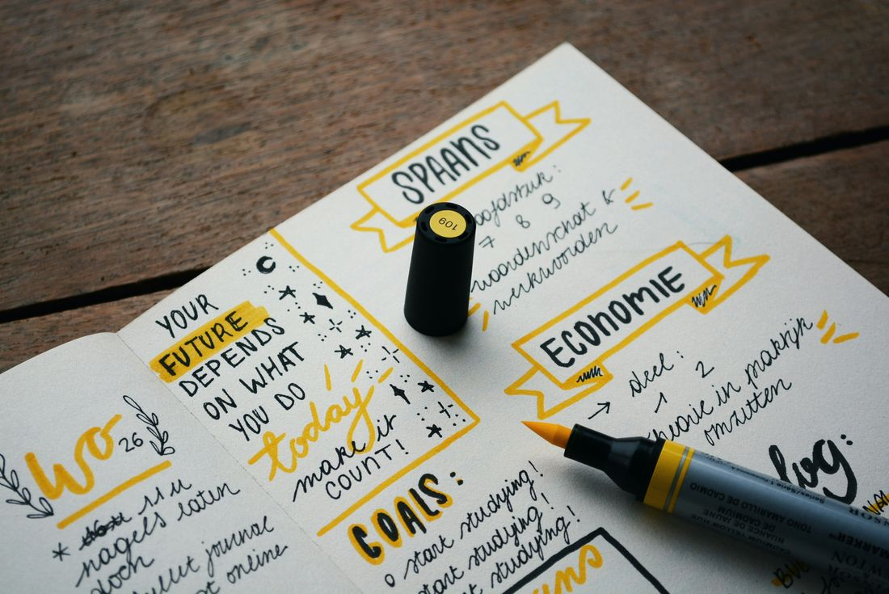

Coaching Individual
Sesiones personalizadas para procesos de cambio, claridad y desarrollo personal.
Coach ontológico y apreciativo · PNL · Constelaciones familiares
Acompaño a personas, equipos y organizaciones en procesos de transformación personal y profesional.
Agendar una sesiónMi trabajo integra, según la necesidad del cliente, al Coaching Ontológico y al Coaching Apreciativo, la Programación Neurolingüística (PNL) y las Constelaciones Familiares, herramientas que permiten abordar desafíos personales y laborales de manera profunda y efectiva.
Cuento con experiencia en el acompañamiento de procesos de cambio, liderazgo, comunicación, desarrollo personal y grupal, gestión emocional y fortalecimiento de relaciones, ayudando a las personas a alcanzar mayor bienestar, claridad y coherencia en sus decisiones y acciones.

Sesiones personalizadas para procesos de cambio, claridad y desarrollo personal.
Liderazgo, comunicación y gestión del cambio para fortalecer la coherencia organizacional.
Espacios de trabajo profundo para sanar patrones familiares y relacionales.
Herramientas prácticas para comprender, regular y transformar tus emociones.
Desarrollo de habilidades de liderazgo consciente y comunicación efectiva.
Curso online
Un recorrido para soltar creencias, patrones y cargas emocionales que te mantienen atrapado/a, y reencontrarte con la versión de ti que actúa desde la libertad.
Libro
Es un libro fascinante que explora los intrincados caminos de la autoconciencia y el desarrollo personal para vivir en felicidad. La Verdad te invita a sumergirte en un viaje hacia tu verdad interior, donde encontrarás valiosas perspectivas sobre cómo alcanzar una vida más auténtica y significativa.
Comprar el libro“Trabajar con Denisse fue un antes y un después. Su acompañamiento me ayudó a ver con claridad lo que necesitaba cambiar.”
— Nombre Apellido
“Un proceso profundo y transformador. Recomiendo totalmente su forma de acompañar.”
— Nombre Apellido
“Encontré claridad y herramientas concretas para liderar a mi equipo de una forma más consciente.”
— Nombre Apellido
Cuéntame brevemente qué buscas y te contacto para coordinar horario.